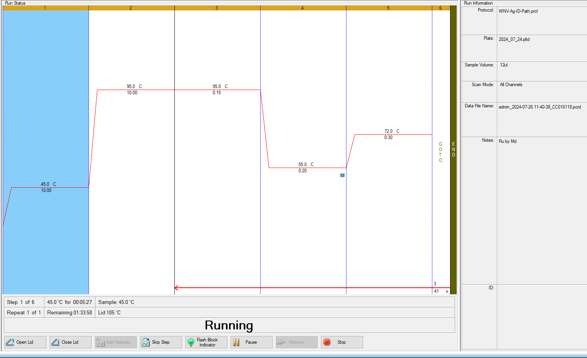
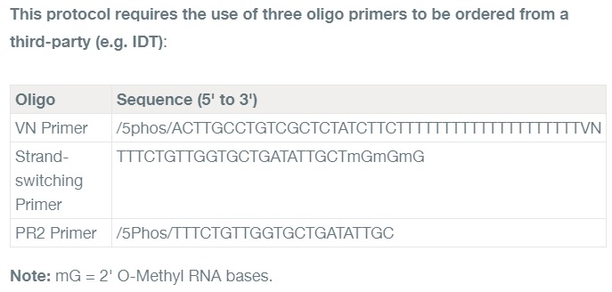

| 1. Get 50 mosquitoes from insectary. | 1. Obtain the necessary number of mosquitoes for the experiment. | 1. Ensure mosquitoes are healthy and of the correct species/strain. |
| 2. Make 5 pools each consisting of 10 mosquitoes in 2ml tubes containing steel balls. | 2. Pooling increases sample size and reduces variability. | 2. Avoid cross-contamination between pools. |
| 3. Make 3 Medium aliquots containing 2ml medium each. | 3. Medium is used as a negative control. | 3. Prepare medium under sterile conditions. |
| 4. Add 10^4/ml particles to one 2ml aliquot -> mix. | 4. Create a spike-in sample with a known concentration of particles. | 4. Verify particle concentration and mix thoroughly. |
| 5. Add 10^6/ml particles to the second 2ml aliquot -> mix. | 5. Create a spike-in sample with a higher concentration of particles. | 5. Verify particle concentration and mix thoroughly. |
| 6. Add 750µl of the 10^4 solution to two pools each and 250µl of the 10^4 solution to Trizol LS (Sample 1). | 6. Spike-in controls help assess extraction efficiency. | 6. Pipette accurately to ensure proper spike-in concentrations. |
| 7. Add 750µl of the 10^6 solution to two pools each and 250µl of the 10^6 solution to Trizol LS (Sample 2). | 7. Spike-in controls help assess extraction efficiency. | 7. Pipette accurately to ensure proper spike-in concentrations. |
| 8. Add 750µl of the control medium to the last mosquito pool and 250µl of the medium to Trizol LS (Sample 3). | 8. The control medium sample serves as a baseline for comparison. | 8. Ensure control medium is sterile and particle-free. |
| 9. Store Trizol LS samples @ -80°C. | 9. Trizol LS preserves RNA/DNA integrity. | 9. Maintain consistent -80°C storage for all samples. |
| 10. Homogenize the pools 2 min @ 30 Hz. | 10. Disrupts mosquito tissues and releases nucleic acids. | 10. Check homogenizer settings and ensure thorough disruption. |
| 11. Centrifuge all samples for 3 min @ 20000g. | 11. Separates cellular debris from the supernatant containing nucleic acids. | 11. Use appropriate centrifuge settings and time. |
| 12. Take 250µl of the supernatant of the smaller control and pools and add it to Trizol LS -> -80°C (Samples 4-6). | 12. Collects a representative sample for later RNA/DNA extraction. | 12. Avoid disturbing the pellet when collecting supernatant. |
| 13. Transfer the remaining supernatant to a fresh tube (for all pools). | 13. Removes debris and potential inhibitors from the supernatant. | 13. Transfer supernatant carefully to avoid contamination. |
| 14. Centrifuge for 10 min @ 20000g. | 14. Further clarifies the supernatant. | 14. Check centrifuge settings and time. |
| 14_1. Take out the plunger from a filtering syringe, and put the empty cylinder on top of a new tube. | 14_1. Prepare the syringe for filtration. | 14_1. Ensure the filter is compatible with the sample type. |
| 14_2. Transfer the sample into the empty cylinder. | 14_2. Begin the filtration process. | 14_2. Avoid spilling or losing sample during transfer. |
| 14_3. Hold the cylinder firmly, and insert the plunger. Push it to filter the sample through the filter. Some dead volume will not be passed through. | 14_3. Complete the filtration step. | 14_3. Apply consistent pressure to the plunger for even filtration. |
| 15. Transfer supernatant/filtered volume to ultracentrifuge tubes. | 15. Prepare for ultracentrifugation. | 15. Use appropriate ultracentrifuge tubes. These tubes are in the ultrcentrifugation room in the closet. |
| 16. Underlay the sample with 20% Sucrose in PBS. | 16. Sucrose cushion helps to concentrate particles during ultracentrifugation. | 16. Prepare sucrose solution accurately. Find out the heaviest one and add PBS to other tubes to make the same volume. Add 1.2mL PBS first to the sample and then add the 20% sucrose. |
| 17. Pellet particles 1h @ 483 750 g (or higher). | 17. Ultracentrifugation pellets particles. | 17. Use correct ultracentrifuge settings and time. We need 60WS to get 48375g. |
| 18. Carefully remove supernatant (best by careful decanting). | 18. Removes unwanted supernatant. | 18. Avoid disturbing the pellet when removing supernatant. |
| 19. Leave the tubes bottoms up for a few minutes to drain any fluid. | 19. Ensure all supernatant is removed. | 19. Complete drainage before proceeding to the next step. |
| 20. Add 1ml Trizol to the pellets (Samples 7-11) -> store @ -80°C till processing. | 20. Trizol preserves RNA/DNA in the pelleted particles. | 20. Add Trizol directly to the pellet to prevent degradation. |
Lab Work Organization
Content summary
Sample prep, RNA extraction, RT-qPCR, cDNA conversion, library prep, ONT sequencing, etc.
Troubleshooting: Sample Preparation
- Extract all trizol samples according to manufacturers protocol
- Add glycogen (0.5µl) for the samples after the sucrose cushion (samples 7-11).
- Determine viral RNA content through RT-qPCR.
Troubleshooting: RNA Extraction
Procedural Guidelines
- Perform all steps at room temperature (20–25°C) unless otherwise noted.
- Use cold TRIzol™ Reagent if the starting material contains high levels of RNase, such as spleen or pancreas samples.
- Use disposable, individually wrapped, sterile plastic ware and sterile, disposable RNase-free pipettes & pipette tips, and tubes.
- Wear disposable gloves while handling reagents and RNA samples to prevent RNase contamination from the surface of the skin; change gloves frequently, particularly as the protocol progresses from crude extracts to more purified materials.
- Always use proper microbiological aseptic techniques when working with RNA.
- Use RNaseZap™ RNase Decontamination Solution (Cat. no. AM9780) to remove RNase contamination from work surfaces and non-disposable items such as centrifuges and pipettes used during purification.
Lyse samples and separate phases
- Lyse and homogenize samples in TRIzol™ Reagent according to your starting material.
Tissues:
Add 1 mL of TRIzol™ Reagent per 50–100 mg of tissue to the sample and homogenize using a homogenizer.Cell grown in monolayer:
- Remove growth media.
- Add 0.3–0.4 mL of TRIzol™ Reagent per 1 × \(10^{5}—10^{7}\) cells directly to the culture dish to lyse the cells.
- Pipet the lysate up and down several times to homogenize.
- Cells grown in suspension:
- Pellet the cells by centrifugation and discard the supernatant.
- Add 0.75 mL of TRIzol™ Reagent per 0.25 mL of sample (5–10 × \(10^{6}\) cells from animal, plant, or yeasty origin or 1 × \(10^{7}\) cells of bacterial origin) to the pellet.
Note: Do not wash cells before addition of TRIzol™ Reagent to avoid mRNA degradation.
- Pipette the lysate up and down several times to homogenize.
Note: The sample volume should not exceed 10% of the volume of TRIzol™ Reagent used for lysis.
STOPPING POINT Samples can be stored at 4°C overnight or at –20°C for up to a year.
- (Optional) If samples have a high fat content, centrifuge the lysate for 5 minutes at 12,000 g at 4–10°C, then transfer the clear supernatant to a new tube.
| 3. Incubate for 5 minutes to permit complete dissociation of the nucleoproteins complex. | 3. Incubation allows the denaturing agents in TRIzol to disrupt cellular structures and dissolve membranes. | 3. If complete dissociation doesn't occur, increase incubation time or use a higher concentration of TRIzol. |
| 4. Add 0.2 mL of chloroform per 1 mL of TRIzol™ Reagent used for lysis, then securely cap the tube. | 4. Chloroform further denatures proteins and promotes phase separation. | 4. Ensure proper mixing of chloroform and TRIzol. Vortex briefly after adding chloroform. |
| 5. Incubate for 2–3 minutes. | 5. This step enhances phase separation and ensures thorough mixing. | 5. Check sample temperature to ensure it's close to room temperature. |
| 6. Centrifuge the sample for 15 minutes at 12,000 × g at 4°C. The mixture separates into a lower red phenol-chloroform, and interphase, and a colorless upper aqueous phase. | 6. Centrifugation causes the sample to separate into distinct layers based on density. | 6. Ensure correct centrifuge speed and time. Incomplete separation may indicate issues with centrifugation. |
| 7. Transfer the aqueous phase containing the RNA to a new tube by angling the tube at 45° and pipette the solution out. | 7. The aqueous phase contains RNA, while DNA and proteins are in the interphase and organic phase, respectively. | 7. Use a micropipette with a wide-bore tip to avoid shearing RNA. Be careful not to disturb the interphase. |
IMPORTANT! Avoid transferring any of the interphase or organic layer into the pipette when removing the aqueous phase.
Proceed directly to “Isolate RNA” on page 2.
Save the interphase and organic phase if you want to isolate DNA or protein. See “Isolate DNA” on page 3 or “Isolate proteins” on page 4 for detailed procedures. The organic phase can be stored at 4°C overnight.
Troubleshooting: RT-qPCR
- I will make a shiny app for the calculation online for any number of
#sample.
N.B. For the NTC, we need everything except the RNA sample (use RNase-free water instead of sample).
- Using
WNV-Ag-ID-Path.prclOne-Step RT-PCR protocol.

- There are 6 steps in the RT-qPCR. Here goes the mechanistic details of the steps:
| Steps | Mechanism |
|---|---|
| Step 1: Reverse Transcription (RT) | The reverse transcriptase enzyme is active at this temperature, converting the RNA template into complementary DNA (cDNA). This is a crucial step as qPCR amplifies DNA, not RNA. |
| Step 2: Initial Denaturation and Enzyme Activation | The high temperature serves two purposes: Denaturation: Separates double-stranded RNA/DNA into single strands, making them accessible for primers. Hot-start activation: Activates the hot-start Taq polymerase, which prevents non-specific amplification at lower temperatures. |
| Step 3: Denaturation | Repeated in each cycle, this step ensures complete separation of newly synthesized DNA strands, allowing primers to bind in the next step. |
| Step 4: Annealing | The primers, designed to be complementary to specific regions of the target DNA, bind (anneal) to their respective targets. Lowering the temperature facilitates this binding. |
| Step 5: Extension | The Taq polymerase extends the primers, synthesizing new complementary DNA strands. This results in the doubling of the target DNA in each cycle. |
| Step 6: Data Acquisition and Analysis | The duration varies (usually a brief step at a temperature between annealing and extension) FAM Fluorescence: The machine measures the fluorescence of the FAM dye, which is typically incorporated into the amplifying DNA (either through a probe or intercalating dye like SYBR Green). The FAM signal increases proportionally with the amount of target DNA. ROX Fluorescence: The ROX dye acts as a passive reference. Its fluorescence should remain constant throughout the run. The machine uses the ROX signal to normalize the FAM signal, correcting for well-to-well variations and potential errors in pipetting. |
Organizational Stuffs
- Reagents are in -20°C fridge (opposite of -80°C fridge).
- Turn on all the switches on the sample hood and rotate the key to turn on. Take the slash up (folded).
- Look if the scissor is there to cut your plate and sealing accordingly.
- Print out the design and keep there to organize the Master Mix (MM) and samples accordingly. Use FAM and ROX for this experiment.
- Keep the enzyme mix always on the cooling block till use.
- Take gloves.
- The cooling blocks change color depending on how hot they are.
- Take 10µL, 20µL, 100µL, 200µL tip boxes if needed. Pipettes are there already inside the hoods.
- Samples on ice.
- Take 1 black box and take ice in it (from downstairs, left hand side while entering). Put the ice boxes in it.
- Take another black box with plate & sealing (touch only with gloves).
- Take 2 Eppendorf tube holders, one for sample and one for H2O, Buffer.
- Touch the RNA sample and reagents only with gloves.
- Keep FAM and Enzyme inside the black box, because it is color sensitive.
- Take the small white box to keep the well plate (with sealing) on the ice box inside it to remove potential contamination issue. Take out when needed after making the MM.
- Clean the MM hood and Sample hood with alcohol first and then start working/putting things inside.
- The centrifuge machine for well plate works this way: Turn on –> Place the plate –> Run for 10-20 secs –> Take out –> Turn off
- Use the first point to pipette off the 11.5 µL MM, don’t push too much. A bit will remain in the tip. That’s fine. It will be the same for all the wells. No air bubble (aerosol) will be formed this way.
| Consumables | Location |
|---|---|
| Cooling blocks (blue and yellow) for PCR tubes and reagents | Shelf XIV, middle room |
| RNase-free water | Rack A, Box 3 |
| 2x RT-PCR buffer (has things for ROX) | Rack A, Box 3 |
| 25x RT-PCR enzyme mix (Rev Transcriptase + Pol) | Rack A, Box 3 |
| FAM mix (Primer + Probe) | Rack B2, Box 2 |
| 96-Well-Plate + sealing | Top-right drawer of RNA side |
| RNA Sample(s) | -80°C fridge (Rack N, Box 4) |
| A waste bag | You know where |
| Scissors | Inside MM hood or you take |
- No. of sample = depends on your experiment & used in the equation to calculate the total volume of MM.
- Take the waste bag out of MM hood to the sample hood, never the other way around.
- Design the well-plate beforehand using correct fluorophores (FAM/ROX), standard samples, concentration of the standards, unknown and/or negative samples, NTC, biological/technical replicates, etc.
- Prepare the reaction mix following this exact order. & See the points on precautions below:
| RNase-free water (100µL aliquot) | 3.75 | 142.5 | To make the correct volume |
| 2x RT-PCR buffer (130µL aliquot?) | 6.25 | 237.5 | Has buffering activity and ROX for internal control |
| FAM mix (10µL aliquot) | 1.00 | 38 | Has primer pairs and probe for amplification and fluorophore detection, respectively |
| 25x RT-PCR enzyme mix (10µL aliquot) | 0.50 | 19 | Has the polymerase for amplification |
| Total vol of MM | 11.50 | 437 | X |
| RNA template (20µL) | 1.00 | x | Inital element/RNA for RT-qPCR |
| Total vol of reaction mix | 12.50 | 475 | X |
- Cut the plate and the sealing accordingly using the scissors. Name/date & orientation should be written.
- Turn on air circulation, & white light in the MM hood.
- Vortex everything (MM, samples) before adding (so, prep the MM in a Eppendorf tube).
-
MM handling: Put the MM in each and every well carefully. Don’t release the pipette inside the well or near the plate. Keep it held. Release only on the waste bag and discard. Otherwise, you might take something from the well and make aerosol (contaminant).
-
Sample handling: Don’t press hard (second point), pipette multiple times and take carefully. Then put in the well carefully. Again follow the same procedure of pipetting.
- Put on the sealing nicely; otherwise aerosol will form and disperse.
- Clean, turn on the UV light in th MM hood.
- Clean, turn off the switches in the sample hood. Turn on the UV. Go back after 20-30 mins to turn of the UV (for the sample hood, MM hood is automatic). Turn off using the key.
- Centrifuge the plate in the other lab (Short pulse for 20 secs). Procedure: Open lid –> Place on the plate –> Switch on –> Close lid –> Hold the button for “Impuls” for 20 secs –> Take out and turn off
- RT-qPCR running: Open the program –> Click on “open lid” –> place on the well-plate as designed –> Put a balance for even heat circulation (if not using the full plate) –> Click on “close lid” –> Choose the right options.
- Run the RT-qPCR using the right protocol (
WNV-Ag-ID-Path.prcl) and set the right location for saving the result.
- Open the result using Bio-Rad CFX Maestro and explore!
Troubleshooting: Reverse Transcription
- The main paper should help us understanding and designing the primers. Primer (1) and (3) are needed.
The ONT protocol for direct cDNA sequencing also provides with the information about the primers required.

Another website is quite good for understanding as well.
Here goes the step-by-step mechanism.
DNase I treatment
Removal of DNase I
Polyadenylating using E. coli poly(A) polymerase
| 1. Start with clean, non-polyadenylated RNA of interest. The sample should be EDTA-free, with no salts present. | Ensures that the RNA sample is free of contaminants that could interfere with the polyadenylation reaction. | If the RNA sample contains EDTA or salts, perform a cleanup step using ethanol precipitation or a commercial RNA purification kit. |
| 2. In a 1.5 ml microcentrifuge tube, set up 3’ polyadenylation reaction as follows: * Non-polyadenylated RNA X μl ≤ 10 μg * 10X E. coli poly(A) polymerase buffer 2 μl 1X * ATP (10 mM) 2 μl 1 mM * Nuclease-free water 15-X μl * E. coli poly(A) polymerase (5 U/μl) 1 μl 5U * TOTAL 20 μl |
Combines the RNA template with the necessary reagents for polyadenylation, including the enzyme, buffer, ATP (the source of adenosine nucleotides), and nuclease-free water to adjust the final volume. | Ensure accurate pipetting, especially with small volumes. Use high-quality, RNase-free reagents. |
| 3. Incubate at 37°C for 0.5–1.5 minutes. | Provides the optimal temperature for the E. coli poly(A) polymerase enzyme to add adenosine nucleotides to the 3' end of the RNA molecules. | Ensure accurate temperature control and timing during incubation. Longer incubation times will result in longer poly(A) tails, but may decrease overall sequencing yield. |
| 4. After 0.5–1.5 minutes of incubation, stop the reaction by adding 5 μl of 50 mM EDTA (to a final concentration of 10 mM EDTA). Final volume will be 25 μl. | EDTA chelates divalent cations (like Mg2+), which are essential for the polymerase enzyme's activity, effectively stopping the reaction. | Ensure thorough mixing after adding EDTA to stop the reaction completely. |
| 5. Add 45 μl of RNase-free SPRI beads to the reaction. | AMPure XP beads selectively bind to RNA, allowing for purification and removal of contaminants like enzymes, salts, and unincorporated nucleotides. | Ensure beads are well-mixed and at room temperature. Use the correct bead-to-sample ratio. |
| 6. Incubate on a Hula Mixer for 5 minutes at room temperature. | Mixing promotes efficient binding of RNA to the beads. | Use a thermomixer or rotator for consistent mixing. |
| 7. Spin down the sample and pellet on a magnet. Keep the tube on the magnet and pipette off and discard the supernatant. | Magnetic separation facilitates removal of unwanted components in the supernatant. | Use a strong magnet and avoid disturbing the beads. |
| 8. Keep the tube on the magnet and wash the beads with 200 μl of freshly-prepared 70% ethanol. Carefully turn the tube 180° twice in the rack to wash pelleted beads. Pippette off and discard the supernatant. | Ethanol washes remove residual contaminants and salts from the beads. | Use fresh 70% ethanol. Carefully turn the tube to ensure all beads are washed. |
| 9. Repeat the previous step for a total of two washes. | Second wash further improves purity. | Repeat washing if the supernatant is still cloudy. |
| 10. Briefly spin down and place the tube back on the magnet. Pipette off any residual ethanol. Allow to dry for 30 seconds, but do not dry the pellet to the point of cracking. | Removes any remaining ethanol, which can interfere with downstream steps. | Avoid over-drying the beads, which can make elution difficult. |
| 11. Remove the tube from the magnetic rack and resuspend the pellet in 12 μl of nuclease-free water. Incubate on ice for 5 minutes. | Elution buffer releases the purified RNA from the beads. Incubation on ice helps maintain RNA integrity. | Use nuclease-free water for elution. Ensure complete resuspension of the beads. |
| 12. Pellet the beads on a magnet until the eluate is clear and colourless. | Magnetic separation collects the beads, leaving the purified RNA in the supernatant. | Use a strong magnet and allow sufficient time for clear eluate. |
| 13. Remove and retain 12 μl of eluate containing the 3’-polyadenylated RNA in a clean 1.5 ml microcentrifuge tube. | Collects the purified, polyadenylated RNA for further analysis or downstream applications. | Avoid transferring any beads with the eluate. |
| 14. Remove 1 μl of final eluate and quantify the final concentration using HS RNA Qubit kit. | Measures the concentration of the purified, polyadenylated RNA to assess yield and quality. | Ensure accurate calibration of the Qubit fluorometer. If yield is low, troubleshoot previous steps. |
| Optional step: Dilute the final eluate to 100 ng/μl and quantify 1 μl using Agilent 6000 Nano RNA kit, using total RNA or mRNA setting depending on the sample. | Provides additional information about RNA size distribution and integrity. | Ensure proper chip preparation and instrument calibration for the Agilent Bioanalyzer. |
| 15. Store the final product at -80°C. | Long-term storage preserves the RNA for future use. | Maintain consistent -80°C storage to prevent RNA degradation. |
Reverse Transcription and Strand-switching
| 1. Prepare the following reaction in a 0.2 ml PCR tube: x μl poly A+ RNA, 100 ng 2.5 μl VNP 1 μl 10 mM dNTPs 7.5-x μl RNase-free water |
Combines mRNA template, VNP (a template switching oligo), dNTPs, and water. VNP anneals to the polyA tail of mRNA and provides a template for reverse transcription. | Ensure accurate quantification and integrity of RNA. Use high-quality, RNase-free water. |
| 2. Mix gently by flicking the tube, and spin down | Ensures all components are well mixed and collects any condensation on the tube walls. | Avoid vigorous mixing, which can shear RNA. |
| 3. Incubate at 65°C for 5 minutes and then snap cool on a pre-chilled freezer block for 1 minute | High temperature denatures RNA secondary structures. Snap cooling prevents re-formation of secondary structures and promotes annealing of VNP to the polyA tail. | Use a pre-chilled freezer block for efficient snap cooling. |
| 4. In a separate tube, mix together the following: 4 μl 5x RT Buffer 1 μl RNaseOUT 1 μl Nuclease-free water 2 μl Strand-Switching Primer (SSP) |
Prepares the reverse transcription and strand-switching buffer containing the necessary reagents. | Prepare the buffer fresh and keep it on ice. Ensure RNase-free conditions. |
| 5. Mix gently by flicking the tube, and spin down. | Ensures thorough mixing of components. | Avoid vigorous mixing, which can shear RNA. |
| 6. Add the strand-switching buffer to the snap-cooled, annealed mRNA, mix by flicking the tube and spin down. | Combines the mRNA template with the RT and strand-switching buffer. | Mix gently to avoid disrupting the annealed mRNA/VNP complex. |
| 7. Incubate at 42°C for 2 minutes in the thermal cycler. | Allows the SSP to anneal to the mRNA/cDNA hybrid. | Ensure accurate temperature and timing in the thermal cycler. |
| 8. Add 1 µl of Maxima H Minus Reverse Transcriptase. The total volume is now 20 µl. | Adds the reverse transcriptase enzyme. | Keep the enzyme on ice until use. Avoid pipetting errors. |
| 9. Mix gently by flicking the tube, and spin down. | Ensures proper mixing of the enzyme with the reaction mixture. | Avoid vigorous mixing, which can shear the cDNA. |
| 10. Incubate using the following protocol using a thermal cycler: Reverse transcription and strand-switching 90 mins @ 42°C (1 cycle) Heat inactivation 5 mins @ 85°C (1 cycle) Hold @ 4°C |
Reverse transcriptase synthesizes cDNA from the mRNA template, and the strand-switching activity of the enzyme generates the second cDNA strand. Heat inactivation denatures the enzyme and stops the reaction. | Ensure accurate temperature and timing in the thermal cycler. |
RNA Degradation and Second Strand Synthesis
| 1. Add 1 µl RiboShredder or RNase Cocktail Enzyme Mix (ThermoFisher, cat # AM2286) to the reverse transcription reaction. | Degrades any remaining RNA, preventing it from interfering with downstream applications. | Use fresh RNase enzyme. Ensure complete RNA degradation by checking for absence of RNA bands on a gel. |
| 2. Incubate the reaction for 10 minutes at 37° C in a thermal cycler. | Provides optimal temperature for RNase activity. | Verify accurate temperature control in the thermal cycler. |
| 3. Resuspend the AMPure XP beads by vortexing. | Ensures consistent bead suspension for efficient binding of cDNA. | Vortex thoroughly until no clumps remain. |
| 4. Transfer the sample to a clean 1.5 ml Eppendorf DNA LoBind tube. | Transfers the sample to a tube compatible with magnetic separation. | Avoid contamination by using clean tubes and pipette tips. |
| 5. Add 17 µl of resuspended AMPure XP beads to the reaction and mix by flicking the tube. | AMPure XP beads selectively bind to cDNA, allowing for purification. | Use the correct volume of beads for the sample volume. Mix gently to avoid foaming. |
| 6. Incubate on a Hula mixer (rotator mixer) for 5 minutes at RT. | Mixing promotes efficient binding of cDNA to the beads. | Ensure proper rotation on the Hula mixer. |
| 7. Prepare 500 μl of fresh 70% ethanol in Nuclease-free water. | Prepares ethanol for washing the beads. | Prepare fresh ethanol and use high-quality, nuclease-free water. |
| 8. Spin down the sample and pellet on a magnet. Keep the tube on the magnet, and pipette off the supernatant. | Magnetic beads are attracted to the magnet, separating them from the supernatant. | Ensure the magnet is strong enough to hold the beads. Avoid disturbing the pellet when removing supernatant. |
| 9. Keep the tube on the magnet and wash the beads with 200 µl of freshly prepared 70% ethanol without disturbing the pellet. Remove the ethanol using a pipette and discard. | Ethanol wash removes impurities and salts from the beads. | Use fresh 70% ethanol and pipette gently to avoid disturbing the beads. |
| 10. Repeat the previous step. | Second wash further improves purity. | Repeat washing if the supernatant is still cloudy. |
| 11. Spin down and place the tube back on the magnet. Pipette off any residual ethanol. Allow to dry for ~30 seconds, but do not dry the pellet to the point of cracking. | Removes any remaining ethanol. | Avoid over-drying the beads, which can make elution difficult. |
| 12. Remove the tube from the magnetic rack and resuspend pellet in 20 µl Nuclease-free water. | Elute the purified cDNA from the beads. | Use the correct volume of nuclease-free water. Ensure complete resuspension. |
| 13. Incubate on a Hula mixer (rotator mixer) for 10 minutes at RT. | Allows the cDNA to rehydrate and detach from the beads. | Ensure proper rotation on the Hula mixer. |
| 14. Pellet the beads on the magnet until the eluate is clear and colourless. | Magnetic separation collects the beads, leaving the purified cDNA in the supernatant. | Use a strong magnet and allow sufficient time for clear eluate. |
| 15. Remove and retain 20 µl of eluate into a clean 1.5 ml Eppendorf DNA LoBind tube. | Collects the purified cDNA for downstream applications. | Avoid transferring any beads with the eluate. |
| 16. Prepare the following reaction in a 0.2 ml thin-walled PCR tube: 25 μl 2x LongAmp Taq Master Mix 2 μl PR2 Primer, 10 μM 20 μl Reverse-transcribed sample from above 3 μl Nuclease-free water |
Sets up the PCR reaction with LongAmp Taq polymerase, primers, and the cDNA template. | Prepare the PCR master mix carefully. Avoid pipetting errors and ensure proper primer concentrations. |
| 17. Incubate using the following protocol: 94°C - Time: 1 mins - No. of cycles: 1 50°C - Time: 1 mins - No. of cycles: 1 65°C - Time: 15 mins - No. of cycles: 1 4°C - Time: ∞ |
Initial denaturation, primer annealing, extension (second strand synthesis), and final hold. | Verify correct thermal cycler settings. Check for amplification using gel electrophoresis. |
| 18. Resuspend the AMPure XP beads by vortexing. | Resuspends the AMPure XP beads for purification. | Vortex thoroughly until no clumps remain. |
| 19. Transfer the sample to a clean 1.5 ml Eppendorf DNA LoBind tube. | Transfers the sample to a tube compatible with magnetic separation. | Avoid contamination by using clean tubes and pipette tips. |
| 20. Add 40 µl of resuspended AMPure XP beads to the reaction and mix by flicking the tube. | AMPure XP beads bind to the amplified cDNA, allowing for purification. | Use the correct volume of beads for the sample volume. Mix gently to avoid foaming. |
| 21. Incubate on a Hula mixer (rotator mixer) for 5 minutes at RT. | Mixing promotes efficient binding of cDNA to the beads. | Ensure proper rotation on the Hula mixer. |
| 22. Prepare 500 μl of fresh 70% ethanol in Nuclease-free water. | Prepares ethanol for washing the beads. | Prepare fresh ethanol and use high-quality, nuclease-free water. |
| 23. Spin down the sample and pellet on a magnet. Keep the tube on the magnet, and pipette off the supernatant. | Magnetic separation collects the beads, separating them from the supernatant. | Ensure the magnet is strong enough to hold the beads. Avoid disturbing the pellet when removing supernatant. |
| 24. Keep the tube on the magnet and wash the beads with 200 µl of freshly prepared 70% ethanol without disturbing the pellet. | Ethanol wash removes impurities and salts from the beads. | Use fresh 70% ethanol and pipette gently to avoid disturbing the beads. |
| 25. Remove the ethanol using a pipette and discard. | Removes the ethanol wash. | Ensure complete removal of ethanol. |
| 26. Repeat the previous step. | Second wash further improves purity. | Repeat washing if the supernatant is still cloudy. |
| 27. Spin down and place the tube back on the magnet. Pipette off any residual ethanol. Allow to dry for ~30 seconds, but do not dry the pellet to the point of cracking. | Removes any remaining ethanol. | Avoid over-drying the beads, which can make elution difficult. |
| 28. Remove the tube from the magnetic rack and resuspend pellet in 21 µl Nuclease-free water. | Elute the purified double-stranded cDNA from the beads. | Use the correct volume of nuclease-free water. Ensure complete resuspension. |
| 29. Incubate on a Hula mixer (rotator mixer) for 10 minutes at RT. | Allows the cDNA to rehydrate and detach from the beads. | Ensure proper rotation on the Hula mixer. |
| 30. Pellet the beads on the magnet until the eluate is clear and colourless. | Magnetic separation collects the beads, leaving the purified cDNA in the supernatant. | Use a strong magnet and allow sufficient time for clear eluate. |
| 31. Remove and retain 21 µl of eluate into a clean 1.5 ml Eppendorf DNA LoBind tube. | Collects the purified cDNA for downstream applications. | Avoid transferring any beads with the eluate. |
| 32. Analyse 1 µl of the strand-switched DNA for size, quantity and quality. | Assess the size distribution, concentration, and integrity of the cDNA to ensure it's suitable for further analysis. | Use appropriate methods for analysis, such as Bioanalyzer or gel electrophoresis. |
Troubleshooting: MinION Sequencing
I am basically doing gDNA and cDNA sequencing. There are some subtle differences in the protocols. Please, refer to the ONT guidelines for details. I am attaching the pdf here though. The reagents highlighted yellow are different in the 2 protocols. Check them out below.
For gDNA sequencing using SQK-LSK109:
For polyA tailing:
For direct cDNA sequencing using SQK-DCS109:
The cDNA sequencing kit uses the same Ligation sequencing kit (SQK-LSK109) + Priming kit (EXP-FLP002). But the adapter mix could be different here (inherently) to ease addition of the adapters to the ds-cDNA sequences.
| Reagent | Function | Protocol |
|---|---|---|
| NEBNext FFPE Repair Mix (NEB, M6630) | Repair the end of the dsDNA. Not needed for cDNA | gDNA seq |
| Adapter Mix (AMX) and Quick T4 Ligase | T4 DNA ligase lygate the adapter mix | gDNA seq |
| E. coli Poly(A) Polymerase (NEB: M0276L) | Adds poly-A tail | cDNA seq |
| 50 mM RNase-free EDTA (Invitrogen: AM9260G) | Stops poly-A tailing after the required time period | cDNA seq |
| NEB Blunt/TA Ligase Master Mix (M0367) | Ligate the dA tail | cDNA seq |
| 10 mM dNTP solution (e.g. NEB N0447) | Nucleotides to be added in the cDNA strands | cDNA seq |
| LongAmp Taq 2X Master Mix (e.g. NEB M0287) | Polymerase for 2nd strand synthesis | cDNA seq |
| Maxima H Minus Reverse Transcriptase (200 U/μl) with 5x RT Buffer (ThermoFisher, cat # EP0751) | For 1st strand synthesis | cDNA seq |
| RNaseOUTTM, 40 U/μl (Life Technologies, cat # 10777019) | To protect RNA template from any RNase | cDNA seq |
| RiboShredder (Epicentre, cat # RS12500), or RNase Cocktail Enzyme Mix (ThermoFisher, cat # AM2286) | To degrade the RNA template before the 2nd strand synthesis | cDNA seq |
| 2.5 μl VNP/DTT | As a primer for the 1st strand synthesis, complementary to the poly-A tail in the RNA | cDNA seq |
| 2 μl Strand-Switching Primer (SSP) | Required for the Maxima H RT (modified MMLV) for full length+ 1st strand synthesis | cDNA seq |
| 2 μl PR2 Primer, 10 μM | Primer to initiate the 2nd strand synthesis | cDNA seq |
DNA Repair and End-prep
End-prep for cDNA sequencing
IMPORTANT If you have prepared your own cDNA instead of performing reverse transcription using the Direct cDNA Sequencing Kit, please start this step with 70-200 ng cDNA in 20 µl Nuclease-free water.
| 1. Perform end repair and dA-tailing of the cDNA sample as follows: 20 µl cDNA sample 30 µl Nuclease-free water 7 µl Ultra II End-prep reaction buffer 3 µl Ultra II End-prep enzyme mix |
Repairs any damaged DNA ends and adds an adenosine (A) nucleotide to the 3' ends of the cDNA, preparing it for ligation to sequencing adapters. | Ensure proper enzyme activity and storage. Use high-quality reagents and follow the manufacturer's instructions. |
| 2. Mix gently by pipetting and spin down. | Ensures proper mixing of reagents. | Avoid vigorous mixing, which can damage DNA. |
| 3. Using a thermal cycler, incubate at 20°C for 5 minutes and 65°C for 5 minutes. | Provides optimal temperature for enzymatic activity: 20°C for end repair and 65°C for A-tailing. | Ensure accurate temperature control and timing in the thermal cycler. |
| 4. Resuspend the AMPure XP beads by vortexing. | Ensures consistent bead suspension for efficient binding of cDNA. | Vortex thoroughly until no clumps remain. |
| 5. Transfer the sample to a 1.5 ml DNA LoBind Eppendorf tube. | Transfers the sample to a tube compatible with magnetic separation. | Use a clean tube to avoid contamination. |
| 6. Add 60 µl of resuspended AMPure XP beads to the end-prep reaction and mix by pipetting. | AMPure XP beads bind to the cDNA, allowing for purification and removal of excess reagents. | Use the correct volume of beads. Mix gently to avoid foaming. |
| 7. Incubate on a Hula mixer (rotator mixer) for 5 minutes at RT. | Mixing promotes efficient binding of cDNA to the beads. | Ensure proper rotation on the Hula mixer. |
| 8. Prepare 500 μl of fresh 70% ethanol in Nuclease-free water. | Prepares ethanol for washing the beads. | Prepare fresh ethanol and use high-quality nuclease-free water. |
| 9. Spin down the sample and pellet on a magnet. Keep the tube on the magnet, and pipette off the supernatant. | Magnetic beads are attracted to the magnet, separating them from the supernatant. | Use a strong magnet and avoid disturbing the pellet when removing supernatant. |
| 10. Keep the tube on the magnet and wash the beads with 200 µl of freshly prepared 70% ethanol without disturbing the pellet. Remove the ethanol using a pipette and discard. | Ethanol wash removes impurities and salts from the beads. | Use fresh 70% ethanol. Pipette gently to avoid disturbing the beads. |
| 11. Repeat the previous step. | Second wash further improves purity. | Repeat the wash if the supernatant is cloudy. |
| 12. Spin down and place the tube back on the magnet. Pipette off any residual ethanol. Allow to dry for ~30 seconds, but do not dry the pellet to the point of cracking. | Removes any remaining ethanol. | Avoid over-drying the beads, which can hinder elution. |
| 13. Remove the tube from the magnetic rack and resuspend pellet in 30 µl Nuclease-free water. Incubate for 2 minutes at RT. | Elution buffer rehydrates the DNA and allows it to detach from the beads. | Use the correct volume of nuclease-free water. Ensure complete resuspension. |
| 14. Pellet the beads on the magnet until the eluate is clear and colourless, for at least 1 minute | Magnetic separation collects the beads, leaving the purified DNA in the supernatant. | Use a strong magnet and allow sufficient time for clear eluate. |
| 15. Remove and retain 30 µl of eluate into a clean 1.5 ml Eppendorf DNA LoBind tube. | Collects the purified, end-repaired, and A-tailed cDNA for further processing. | Avoid transferring any beads with the eluate. |
Take forward 30 µl of end-prepped cDNA into adapter ligation.
Adapter Ligation for cDNA
| 1. Check the contents of each tube are clear of any precipitate and are thoroughly mixed before setting up the reaction. Mix the contents of each tube by flicking. Check that there is no precipitate present (DTT in the Blunt/TA Master Mix can sometimes form a precipitate) Spin down briefly before accurately pipetting the contents in the reaction. |
Ensures that all reagents are properly mixed and no precipitates are present, which could interfere with the ligation reaction. | If precipitate is observed, warm the tube briefly at 37°C and vortex gently until the precipitate dissolves. |
| 2. Taking the end-prepped DNA, perform adapter ligation as follows, mixing by flicking the tube between each sequential addition. 30 µl End-prepped DNA 5 µl Adapter Mix 50 µl Blunt/TA Ligation Master Mix 15 µl Nuclease-free water |
Combines the end-prepped cDNA with adapters and the ligation master mix. The adapters contain sequences necessary for sequencing and bridge amplification. | Use fresh, high-quality reagents. Ensure accurate pipetting and avoid contamination. |
| 3. Mix gently by flicking the tube, and spin down. | Ensures all components are well mixed and collects any condensation on the tube walls. | Avoid vigorous mixing, which can damage DNA. |
| 4. Incubate the reaction for 10 minutes at RT. | Provides optimal temperature for the ligase enzyme to join the adapters to the cDNA ends. | Ensure accurate temperature control. Avoid extending the incubation time, as this could lead to non-specific ligation. |
Output: Adapted and tethered DNA library.
AMPure XP bead binding
| 1. Resuspend the AMPure XP beads by vortexing. | Ensures consistent bead suspension for efficient binding of DNA. | Vortex thoroughly until no clumps remain. |
| 2. Add 40 µl of resuspended AMPure XP beads to the adapter ligation reaction from the previous step and mix by pipetting. | AMPure XP beads selectively bind to DNA fragments larger than a certain size, allowing for size selection and purification. | Use the correct volume of beads for the sample volume. Mix gently to avoid foaming. |
| 3. Incubate on a Hula mixer (rotator mixer) for 5 minutes at RT. | Mixing promotes efficient binding of DNA to the beads. | Ensure proper rotation on the Hula mixer. |
| 4. Place on a magnetic rack, allow beads to pellet and pipette off supernatant. | Magnetic separation collects the beads, separating them from the supernatant containing unwanted fragments and reagents. | Use a strong magnet and avoid disturbing the pellet when removing supernatant. |
| 5. Add 200 μl of Wash Buffer (WSB) to the beads. Resuspend the beads by pipetting up and down. Return the tube to the magnetic rack, allow beads to pellet and pipette off the supernatant. | Wash buffer removes impurities and salts from the beads. | Use fresh wash buffer and pipette gently to avoid disturbing the beads. |
| 6. Repeat the previous step. | Second wash further improves purity. | Repeat washing if the supernatant is still cloudy. |
| 7. Spin down and place the tube back on the magnet. Pipette off any residual supernatant. Allow to dry for ~30 seconds, but do not dry the pellet to the point of cracking. | Removes any remaining wash buffer, which can interfere with downstream applications. | Avoid over-drying the beads, which can make elution difficult. |
| 8. Remove the tube from the magnetic rack and resuspend pellet in 13 µl of Elution Buffer (EB). | Elution buffer rehydrates the DNA and allows it to detach from the beads. | Use the correct volume of elution buffer. Ensure complete resuspension. |
| 9. Incubate on a Hula mixer (rotator mixer) for 10 minutes at RT. | Incubation allows the DNA to fully rehydrate and elute from the beads. | Ensure proper rotation on the Hula mixer. |
| 10. Pellet the beads on a magnet until the eluate is clear and colourless. | Magnetic separation collects the beads, leaving the purified DNA in the supernatant. | Use a strong magnet and allow sufficient time for clear eluate. |
| 11. Remove and retain 13 µl of eluate into a clean 1.5 ml Eppendorf DNA LoBind tube. | Collects the purified DNA for downstream applications. | Avoid transferring any beads with the eluate. |
| 12. Quantify 1 µl of eluted cDNA using a Qubit fluorometer - recovery aim ~60 ng. | Measures the concentration of the purified cDNA to assess yield and quality. | Ensure accurate calibration of the Qubit fluorometer. If yield is low, troubleshoot previous steps. |
The prepared library is used for loading onto the flow cell. Store the library on ice until ready to load.
Priming and Loading on SpotON flowCell
| 1. Thaw the Sequencing Buffer (SQB), Loading Beads (LB), Flush Tether (FLT) and one tube of Flush Buffer (FB) at RT before mixing the reagents by vortexing, and spin down the SQB, FB and FLT at RT. | Thawing and mixing reagents ensures they are at the correct temperature and consistency for optimal performance. | Ensure all reagents are completely thawed and mixed before use. Check for any signs of contamination or degradation. |
| 2. Prepare the flow cell priming mix: Add 30 µl of thawed and mixed Flush Tether (FLT) directly to the tube of thawed and mixed Flush Buffer (FB), and mix by vortexing. | The priming mix prepares the flow cell for loading by coating the channels and pores with reagents that facilitate DNA binding and sequencing. | Avoid introducing air bubbles into the priming mix. Mix gently to avoid foaming. |
| 3. Open the MinION Mk1C lid and slide the flow cell under the clip. | Provides access to the flow cell ports for loading reagents. | Handle the flow cell with care to avoid damage. Make sure it is properly seated under the clip. |
| 4. Slide the priming port cover clockwise to open the priming port. | Opens the port for loading the priming mix. | Open the priming port slowly and carefully to prevent damage. |
| 5. IMPORTANT: Take care when drawing back buffer from the flow cell. Do not remove more than 20-30 µl, and make sure that the array of pores are covered by buffer at all times. Introducing air bubbles into the array can irreversibly damage pores. After opening the priming port, check for a small air bubble under the cover. Draw back a small volume to remove any bubbles: Set a P1000 pipette to 200 µl Insert the tip into the priming port Turn the wheel until the dial shows 220-230 µl, to draw back 20-30 µl, or until you can see a small volume of buffer entering the pipette tip Note: Visually check that there is continuous buffer from the priming port across the sensor array. |
Removes any air bubbles that may have formed under the priming port cover, which could interfere with flow cell function. | Use caution when drawing back buffer. Avoid removing too much or introducing air bubbles. |
| 6. Load 800 µl of the priming mix into the flow cell via the priming port, avoiding the introduction of air bubbles. Wait for five minutes. During this time, prepare the library for loading by following the steps below. | The priming mix helps to wet the flow cell channels and pores, ensuring proper fluid flow and DNA capture. | Avoid introducing air bubbles when loading the priming mix. Ensure the full volume is loaded. |
| 7. Thoroughly mix the contents of the Loading Beads (LB) by pipetting. | Ensures uniform distribution of beads for optimal library loading. | Mix gently to avoid damaging the beads. |
| 8. IMPORTANT: The Loading Beads (LB) tube contains a suspension of beads. These beads settle very quickly. It is vital that they are mixed immediately before use In a new tube, prepare the library for loading as follows: 37.5 µl Sequencing Buffer (SQB) 25.5 µl Loading Beads (LB), mixed immediately before use 12 µl DNA library |
Combines the library with sequencing buffer and loading beads. The loading beads help to concentrate the library and facilitate its entry into the flow cell pores. | Mix the loading beads immediately before use to prevent settling. Avoid over-mixing, which can damage DNA. |
| 9. Complete the flow cell priming: Gently lift the SpotON sample port cover to make the SpotON sample port accessible. Load 200 µl of the priming mix into the flow cell priming port (not the SpotON sample port), avoiding the introduction of air bubbles. |
Completes the priming process, ensuring all channels and pores are properly coated and ready for sequencing. | Avoid introducing air bubbles when loading the priming mix. Ensure the full volume is loaded. |
| 10. Mix the prepared library gently by pipetting up and down just prior to loading. | Ensures the library is well mixed and evenly distributed before loading. | Mix gently to avoid damaging the DNA library. |
| 11. Add 75 μl of the prepared library to the flow cell via the SpotON sample port in a dropwise fashion. Ensure each drop flows into the port before adding the next. | The SpotON port allows for gentle and controlled loading of the library onto the flow cell. | Load the library slowly and carefully to avoid air bubbles or spills. Ensure complete loading. |
| 12. Gently replace the SpotON sample port cover, making sure the bung enters the SpotON port and close the priming port. | Prevents contamination and leakage of reagents. | Close the ports securely to prevent leakage. |
| 13. IMPORTANT: Install the light shield on your flow cell as soon as the library has been loaded for optimal sequencing output. Place the light shield onto the flow cell, as follows: Carefully place the leading edge of the light shield against the clip. Note: Do not force the light shield underneath the clip. Gently lower the light shield onto the flow cell. The light shield should sit around the SpotON cover, covering the entire top section of the flow cell. |
The light shield protects the flow cell from ambient light, which can interfere with sequencing. | Install the light shield gently to avoid damaging the flow cell. Make sure it is properly seated. |
Close the device lid and set up a sequencing run on MinKNOW.
Troubleshooting: SISPA Protocol
cDNA Synthesis
| 1. Mix in a clean 0.2 ml PCR tube: * 1 μl dNTP Mix (10 mM) * 1 μl FR26RV-N (Stock = 50 μM) * 11 μl Viral RNA (ideally the Cq should be <23-26, depending on the virus) |
Combines the viral RNA template, dNTPs (building blocks for DNA synthesis), and the first SISPA primer (FR26RV-N). The primer contains a barcode sequence and random hexamers that will anneal to the viral RNA. | Ensure accurate quantification and integrity of RNA. Use high-quality, RNase-free reagents. The Cq value of the viral RNA should be within the optimal range for efficient reverse transcription. |
| 2. Incubate for 5 min at 65 °C in the thermal cycler. Place on ice for 1 min. | The high temperature denatures RNA secondary structures, making it more accessible for primer binding. The subsequent cooling on ice helps maintain the denatured state and promotes primer annealing. | Verify accurate temperature control in the thermal cycler. Use a pre-chilled ice bath for rapid cooling. |
| 3. Pre-warm 5x SSIV Buffer at 37 °C for 10 minutes before use, mix by vortexing and spin down. | Pre-warming the buffer ensures optimal enzyme activity during reverse transcription. Mixing and spinning down ensure homogeneity and prevent reagent loss due to condensation. | Use a water bath or heat block for accurate temperature control. Mix gently to avoid introducing air bubbles. |
| 4. Add per sample: * 4 μl SSIV buffer 5x * 1 μl DTT 100 mM * 1 μl RNase Inhibitor (RNase OUT; 40 U/μl) * 1 μl SSIV Reverse Transcriptase (200 U/μl) |
Provides the necessary buffer conditions, reducing agents (DTT), and RNase inhibitor to protect the RNA template and ensure efficient reverse transcription. The reverse transcriptase enzyme catalyzes the synthesis of cDNA from the RNA template. | Prepare the reaction mix on ice to minimize RNase activity. Use fresh, high-quality reagents. Avoid pipetting errors, especially with small volumes. |
| 5. Close lids thoroughly, spin down quickly using bench top centrifuge | Prevents evaporation and contamination during the reaction. | Ensure tubes are properly sealed. Use a balanced centrifuge for quick and efficient spin-down. |
| 6. Place in the thermal cycler: 23 °C for 10 min, 50 °C for 50 min, 80 °C for 10 min, Hold at 4 °C | * 23 °C: Allows for primer annealing to the RNA template. * 50 °C: Optimal temperature for reverse transcriptase activity, enabling cDNA synthesis. * 80 °C: Inactivates the reverse transcriptase enzyme. * 4 °C: Holds the reaction until further processing. |
Verify accurate temperature control and timing in the thermal cycler. |
Double-strand synthesis
| 1. Add 1 μl of Klenow polymerase (5 U/μl) per sample directly to the tube. | Klenow polymerase, a DNA polymerase lacking 5'->3' exonuclease activity, synthesizes the second cDNA strand using the annealed SISPA primer as a template. This results in double-stranded cDNA with barcode sequences incorporated into both strands. | Keep the Klenow polymerase on ice until use to maintain its activity. Avoid pipetting errors, especially with small volumes. |
| 2. Close lids thoroughly, spin down quickly using bench top centrifuge | Prevents evaporation and contamination during the reaction. | Ensure tubes are properly sealed. Use a balanced centrifuge for quick and efficient spin-down. |
| 3. Place in the thermal cycler: 37 °C for 60 min, 75 °C for 10 min | * 37 °C: Optimal temperature for Klenow polymerase activity, allowing for efficient second strand synthesis. * 75 °C: Inactivates the Klenow polymerase enzyme. |
Verify accurate temperature control and timing in the thermal cycler. |
cDNA Amplification
| 1. Mix: * 5 μl dsDNA * 1 μl FR20RV (Stock 40 μM, final concentration 0.8 μM) * 5 μl 10 X PfU Ultra II reaction Buffer * 1.25 μl dNTP Mix 10 mM * 1 μl PfU Ultra II Fusion HS DNA polymerase (keep on cooling rack) * 36.75 μl Nuclease-free Water |
Combines the double-stranded cDNA template, the second SISPA primer (FR20RV), dNTPs, buffer, and a high-fidelity DNA polymerase (PfU Ultra II Fusion HS). The second SISPA primer binds to the barcode sequences incorporated in the previous steps, enabling amplification of the cDNA. | Ensure accurate pipetting, especially with small volumes. Keep the polymerase enzyme on ice until use to maintain its activity. Use high-quality, nuclease-free water. |
| 2. Close lids thoroughly, spin down quickly using bench top centrifuge | Prevents evaporation and contamination during the reaction. | Ensure tubes are properly sealed. Use a balanced centrifuge for quick and efficient spin-down. |
| 3. Place in the thermal cycler: * Denaturation 95 °C 1 min * 45 Cycles * 95 °C 20 sec * 65 °C 20 sec * 72 °C 3 min * Final Extension 72 °C 3 min * Hold 4 °C |
* 95 °C (Denaturation): Separates the double-stranded cDNA into single strands. * 65 °C (Annealing): Allows the second SISPA primer to bind to the cDNA. * 72 °C (Extension): The polymerase enzyme synthesizes new DNA strands, amplifying the cDNA. * 45 Cycles: Repeats the denaturation, annealing, and extension steps to generate a sufficient amount of amplified cDNA. * Final Extension: Ensures complete extension of all cDNA strands. * 4 °C: Holds the reaction until further processing. |
Verify accurate temperature control and timing in the thermal cycler. Optimize the number of PCR cycles if needed to achieve sufficient amplification without introducing artifacts. |
Clean-up of cDNA amplicon
| 1. Transfer 25 μl of the dsDNA to a 1.5 mL DNA LoBind tubes; the spare dsDNA should be stored at 4 °C as backup. | Transfer the amplified cDNA to a suitable tube for purification. | Use LoBind tubes to minimize DNA loss. |
| 2. Bring AMPure beads to room temperature. Mix the beads thoroughly before use! Add 1.8 x (sample volume) beads, e.g. for 25 μl sample add 45 μl beads; | AMPure XP beads selectively bind DNA, allowing for purification and concentration. | Ensure beads are well-mixed and at room temperature. Use the correct bead-to-sample ratio. |
| 3. Mix sample thoroughly by pipetting up and down at least 15 x | Ensures efficient binding of cDNA to the beads. | Mix gently to avoid foaming or DNA damage. |
| 4. Incubate at room temperature for 7 min on a thermomix (room temperature, 550 rpm) | Incubation allows the cDNA to bind to the beads. | Use a thermomixer or rotator for consistent mixing. |
| 5. Quickly centrifuge | Brief centrifugation ensures all liquid is at the bottom of the tube. | Ensure complete pelleting of beads before removing supernatant. |
| 6. Place tubes in the magnetic stand and leave tubes in the magnetic rack until elution (!) | Magnetic separation facilitates removal of unwanted components. | Use a strong magnet and avoid disturbing the beads. |
| 7. After 5 minutes remove the supernatant slowly; hold the tube with one hand while opening the cap! | Careful removal prevents disturbing the bound cDNA. | Remove supernatant carefully to avoid losing beads. |
| 8. Add 1 ml 80 % ethanol and incubate for 30 sec at room temperature | Ethanol washes remove contaminants and salts. | Use fresh 80% ethanol. |
| 9. Slightly rotate the tubes in the magnetic rack to concentrate the beads | Helps concentrate the beads for efficient washing. | Avoid excessive agitation, which can dislodge the beads. |
| 10. Slowly remove the supernatant and discard the ethanol | Removes the ethanol wash. | Remove supernatant completely without disturbing the beads. |
| 11. Add another 1 ml 80 % ethanol and incubate for 30 sec at room temperature | Second wash further improves purity. | Use fresh 80% ethanol. |
| 12. Slowly remove the supernatant and discard the ethanol | Removes residual ethanol, which can interfere with downstream steps. | Remove supernatant completely without disturbing the beads. |
| 13. Remove all remaining ethanol with a 10 μl pipet and a clean tip and let air dry for 10 min with the tube opened | Ensure complete removal of ethanol before elution. Avoid over-drying the beads. | Ensure complete removal of ethanol before elution. Avoid over-drying the beads. |
| 14. Elution: Take the tube from the magnetic stand and add 25 μl nuclease-free water directly onto the beads. Resuspend the beads by pipette mixing. Incubate 2 min at room temperature. Place tube on magnetic stand and incubate for 10 min. Transfer the eluate containing the DNA into a clean reaction tube | Elution buffer releases the purified cDNA from the beads. | Use nuclease-free water for elution. Ensure complete resuspension of the beads. |
End Prep and Barcode Ligation
| 1. Mix in a clean 1.5 ml DNA LoBind tube: o 10 μl DNA o 1.4 μl Ultra II End Reaction Buffer o 0.6 μl Ultra II End Prep Enzyme Mix (keep in cooling rack or on ice) |
Combines the purified cDNA with the end-prep reaction mix, which contains enzymes for repairing DNA ends and adding a 3' adenine overhang. | Ensure proper enzyme activity and storage. Use high-quality reagents. |
| 2. Incubate using thermomix: 10 min Room Temperature, 5 min 65 °C, Place on ice 1 min. | Provides optimal temperatures for the end-repair and A-tailing reactions. | Verify accurate temperature control and timing in the thermomixer. |
| 3. Directly add: o 2.5 μl NB(XX) barcode ▪ e.g. Sample 1 = Barcode 06; Sample 2 = Barcode 07; Sample 03 = Barcode 08 ▪ Note down which barcode was used for which sample (!) o 14,5 μl Ultra II Ligation Master Mix o 0,5 μl Ligation Enhancer |
Adds a unique barcode to each sample, allowing for multiplexing during sequencing. The ligation master mix and enhancer facilitate the joining of the barcode to the cDNA. | Use fresh, high-quality reagents. Keep the ligation mix and enhancer on ice until use. |
| 4. Incubate using thermomix: 20 min Room Temperature, 10 min 70 °C, Place on ice 1 min | Provides optimal temperatures for the ligation reaction. | Verify accurate temperature control and timing in the thermomixer. |
| 5. POOL ALL SAMPLES in a single tube! | Combines all barcoded samples into a single tube for further processing and sequencing. | Ensure thorough mixing of all samples before pooling. |
Cleanup of barcoded DNA
| 1. Add 29.5 μl AMPure XP beads per sample [equal volume (1:1) sample:beads] | AMPure XP beads selectively bind DNA, allowing for purification and concentration. | Ensure beads are well-mixed and at room temperature. Use the correct bead-to-sample ratio. |
| 2. Mix by pipetting and quickly centrifuge | Ensures efficient binding of DNA to the beads. | Mix gently to avoid foaming or DNA damage. |
| 3. Incubate for 5 min at room temperature | Incubation allows the DNA to bind to the beads. | Use a thermomixer or rotator for consistent mixing. |
| 4. Place the sample on the magnetic rack | Magnetic separation facilitates removal of unwanted components. | Ensure complete pelleting of beads before removing supernatant. |
| 5. Incubate for at least 2 min until the supernatant is completely clear | Ensures complete binding of DNA to the beads. | Use a strong magnet and avoid disturbing the beads. |
| 6. Carefully remove the supernatant | Careful removal prevents disturbing the bound DNA. | Remove supernatant carefully to avoid losing beads. |
| 7. Add 300 μl 70% ethanol to the tube still on the magnetic rack | Ethanol washes remove contaminants and salts. | Use fresh 70% ethanol. |
| 8. Incubate 30 secs | Allows ethanol to penetrate and wash the beads. | Avoid excessive agitation, which can dislodge the beads. |
| 9. Carefully remove the supernatant | Removes the ethanol wash. | Remove supernatant completely without disturbing the beads. |
| 10. Repeat last three steps (2nd ethanol wash) | Second wash further improves purity. | Repeat washing if the supernatant is still cloudy. |
| 11. Spin down and remove residual ethanol with the tube placed on the magnetic rack using a clean filter tip and a pipette. | Removes residual ethanol, which can interfere with downstream steps. | Ensure complete removal of ethanol before elution. Avoid over-drying the beads. |
| 12. Air dry 1 min | Allows residual ethanol to evaporate. | Do not over-dry the beads, as this can make elution difficult. |
| 13. Resuspend in 30 μl EB by pipetting | Elution buffer releases the purified DNA from the beads. | Use the correct volume of elution buffer. Ensure complete resuspension of the beads. |
| 14. Incubate off the magnetic rack for 2 min | Incubation allows the DNA to fully rehydrate and elute from the beads. | Incubate at the correct temperature and time. |
| 15. Replace on magnetic rack | Magnetic separation collects the beads, leaving the purified DNA in the supernatant. | Use a strong magnet and allow sufficient time for clear eluate. |
| 16. Transfer eluted DNA to a fresh 1.5 mL DNA LoBind tube | Collects the purified, barcoded DNA for further processing. | Avoid transferring any beads with the eluate. |
| 17. Label tube accordingly with an ethanol-resistant labmarker | Ensures proper identification of the sample. | Use a marker that won't smudge or fade when exposed to ethanol. |
SISPA vs Maxima H Minus RT/SSP (MMLV RT)
MMLV RT just make ssRNA to ds-cDNA. But for this, we need to add poly-A tail first. On the other hand, SISPA protocol has both ds-cDNA making step and amplification step of the cDNA using standard PCR protocol. So, we will have pre-amplified DNA samples out of the starting RNA material. And we don’t need 3´ poly-A tailing since the primers are random hexamers (with barcode) here in this protocol.
Troubleshooting: Data Analysis
We knew the concentration/titer of the (Usutu) virus used to spike the mosquito pools. So, we have an expectation of the concentration of viruses in our samples. I tried to do the calculation for the expectation and compared with the predicted ones.
Different steps of the genomic pipeline is done separately. Working on making the automated snakemake pipeline making.
Troubleshooting: FlowCell Count Issue
It is fine. We used same FlowCell for multiple times (e.g. all LMD sequencing were done on 1 FlowCell, WNV_sup sample was run on the FlowCell used for the 5RNAvir cocktail run)
Troubleshooting: Contamination Issue
I used the DCS reagent (1 µL) for all the samples using the LMD sequencing protocol. I should have use the direct cDNA sequencing protocol (SQK-DCS109) where I was supposed to use 1 µL more of the sample omitting the use of the DCS.
Citation
BibTeX citation:
@online{rasheduzzaman2024,
author = {Md Rasheduzzaman},
title = {Lab {Work} {Organization}},
date = {2024-08-27},
langid = {en},
abstract = {Sample prep, RNA extraction, RT-qPCR, cDNA conversion,
library prep, ONT sequencing, etc.}
}
For attribution, please cite this work as:
Md Rasheduzzaman. 2024. “Lab Work Organization.” August 27,
2024.